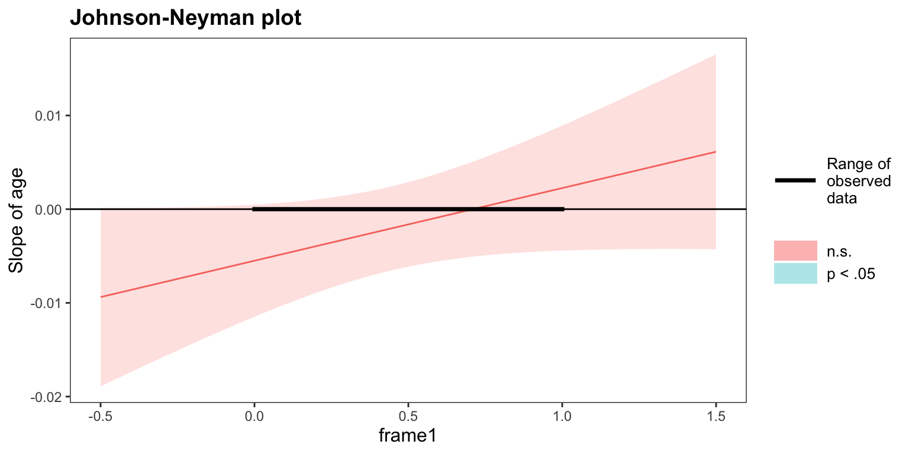
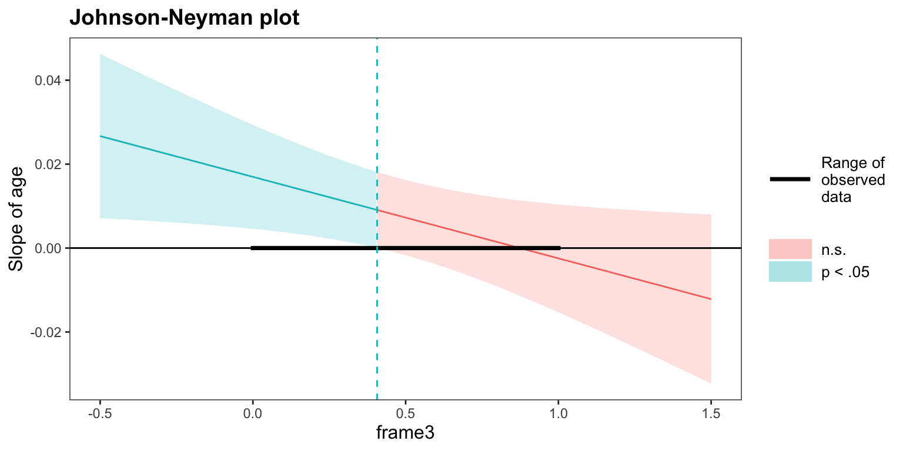
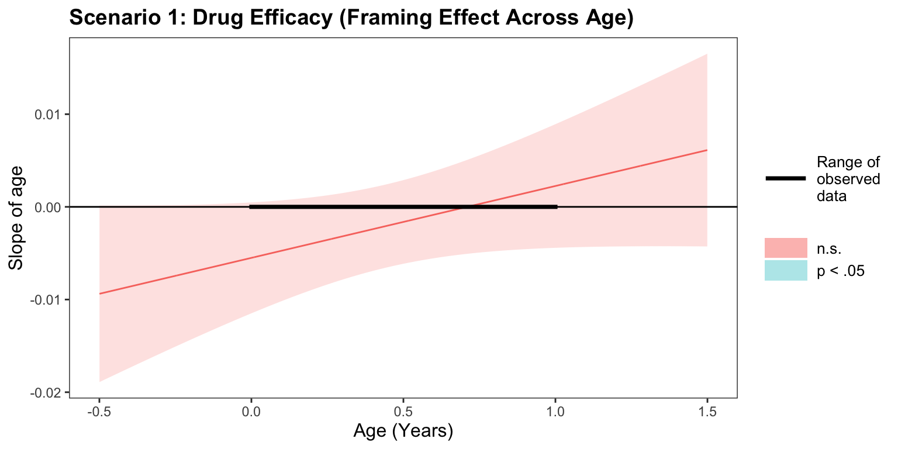
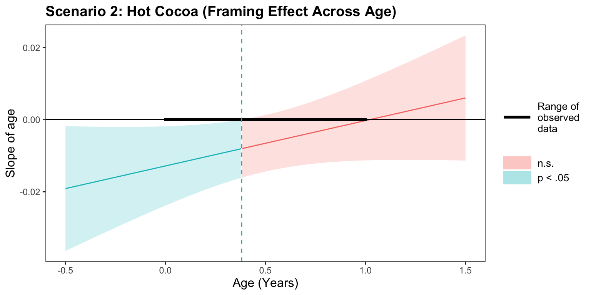
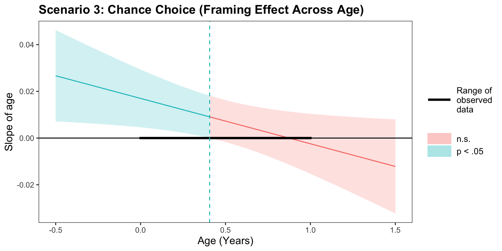
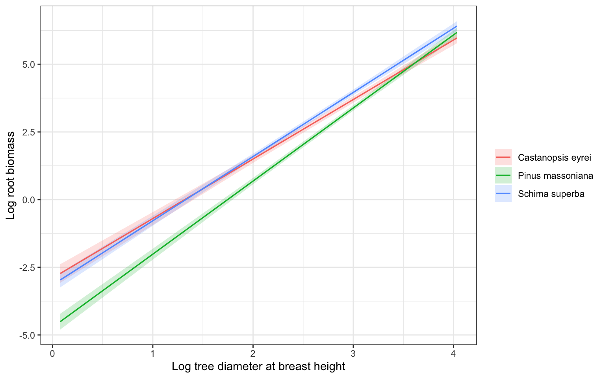
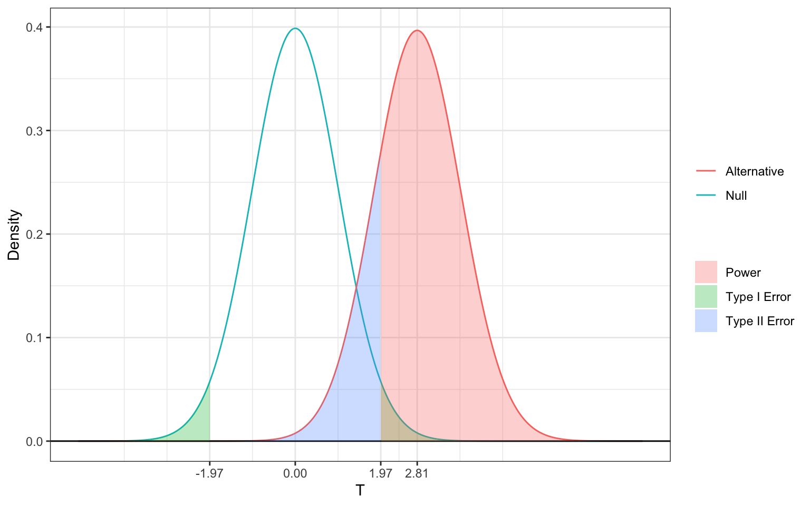

In Homework 4, we evaluated whether and how positive and negative framings impact adult perception of three unique situations using data from Xu (2024).
Gemini AI Solution below. I had to
Adjust the data cleaning which did not work.
Adjust the Johnson Neyman analysis that did not work.
Read the following subsections where gemini does the analysis. Use to make notes about what you do not like and for notes about what you do like. Of course, anything that is missing should be reported in .
1.1 Overview & Analytical Strategy
To evaluate whether framing effects strengthen as adults age—and to identify whether age-related divergence is driven by positive or negative wording—we fit three multiple linear regression models (one per scenario):
where \(\mathbf{X}_i\) adjusts for simultaneous linear differences across gender, ethnicity, education level, and political affiliation.
Interaction (\(\beta_3\)): Tests whether the gap between Positive and Negative framing widens with age.
Simple Slopes: Evaluates the age slope separately within the Positive frame and the Negative frame to determine which framing drives the change.
Johnson-Neyman (J-N) Analysis: Identifies the exact age threshold (“onset”) at which the conditional difference between Positive and Negative frames becomes statistically significant (\(p < .05\)).
1.2 Data Import and Cleaning
Note that HW4Data.csv contains Qualtrics metadata in Row 1 (short variable names) followed by participant responses, as well as trailing empty rows (N = 696 valid respondents out of 842 non-header rows).
Code
library(tidyverse)library(broom)library(emmeans)library(interactions)library(knitr)# Read raw fileraw_df <-read_csv("HW4Data.csv", show_col_types =FALSE)# Prof had to remove empty columns to fix an issue with filter() later# currently column names are in the first row. Remove empty columns.raw_df_sub <- raw_df[, c(!is.na(raw_df[1,]))] # Extract clean variable names and assign to data frameclean_names <-as.character(unlist(raw_df_sub[1, ])) |>str_trim()df <- raw_df_sub[-1, ]names(df) <-make.unique(clean_names)df_clean <- df |>filter(!is.na(responseID), responseID !="") |>mutate(age =as.numeric(age),pick1 =as.numeric(pick1),pick2 =as.numeric(pick2),pick3 =as.numeric(pick3),# Standardize frame labels with Negative as reference levelframe1 =factor(if_else(str_starts(treatment1, "pos"), "Positive", "Negative"),levels =c("Negative", "Positive")),frame2 =factor(if_else(str_starts(treatment2, "pos"), "Positive", "Negative"),levels =c("Negative", "Positive")),frame3 =factor(if_else(str_starts(treatment3, "pos"), "Positive", "Negative"),levels =c("Negative", "Positive")),gender =factor(gender),ethnicity =factor(ethnicity),education =factor(education),politics =factor(politics) )cat("Total valid respondents:", nrow(df_clean), "\n")
# Model 1: Drug Efficacy (1 = very bad, 6 = very good)m1 <-lm(pick1 ~ age * frame1 + gender + ethnicity + education + politics, data = df_clean)# Model 2: Hot Cocoa & Cadmium Risk (1 = surely stop, 6 = surely continue)m2 <-lm(pick2 ~ age * frame2 + gender + ethnicity + education + politics, data = df_clean)# Model 3: Disease Outbreak / Chance Choice (1 = surely safe, 6 = surely risky)m3 <-lm(pick3 ~ age * frame3 + gender + ethnicity + education + politics, data = df_clean)# Helper function to display focal interaction termsextract_focal <-function(model, scenario_label) {tidy(model, conf.int =TRUE) |>filter(str_detect(term, "^(\\(Intercept\\)|age|frame)")) |>mutate(Scenario = scenario_label) |> dplyr::select(Scenario, term, any_of(c("estimate", "std.error", "statistic","p.value", "conf.low", "conf.high")))}bind_rows(extract_focal(m1, "Scenario 1: Drug Efficacy"),extract_focal(m2, "Scenario 2: Hot Cocoa"),extract_focal(m3, "Scenario 3: Chance Choice")) |>kable(digits =4, caption ="Focal Regression Estimates (Adjusting for Demographics)")
Focal Regression Estimates (Adjusting for Demographics)
Scenario
term
estimate
std.error
statistic
p.value
conf.low
conf.high
Scenario 1: Drug Efficacy
(Intercept)
3.3496
0.3662
9.1461
0.0000
2.6305
4.0687
Scenario 1: Drug Efficacy
age
-0.0055
0.0030
-1.8061
0.0713
-0.0115
0.0005
Scenario 1: Drug Efficacy
frame1Positive
0.3429
0.1931
1.7759
0.0762
-0.0362
0.7221
Scenario 1: Drug Efficacy
age:frame1Positive
0.0078
0.0045
1.7123
0.0873
-0.0011
0.0166
Scenario 2: Hot Cocoa
(Intercept)
2.0951
0.6460
3.2431
0.0012
0.8267
3.3636
Scenario 2: Hot Cocoa
age
-0.0128
0.0056
-2.2929
0.0222
-0.0238
-0.0018
Scenario 2: Hot Cocoa
frame2Positive
-0.0255
0.3361
-0.0759
0.9396
-0.6854
0.6344
Scenario 2: Hot Cocoa
age:frame2Positive
0.0126
0.0079
1.5953
0.1111
-0.0029
0.0280
Scenario 3: Chance Choice
(Intercept)
1.6526
0.7411
2.2300
0.0261
0.1975
3.1077
Scenario 3: Chance Choice
age
0.0170
0.0063
2.6920
0.0073
0.0046
0.0293
Scenario 3: Chance Choice
frame3Positive
0.1933
0.3847
0.5025
0.6155
-0.5621
0.9488
Scenario 3: Chance Choice
age:frame3Positive
-0.0194
0.0090
-2.1527
0.0317
-0.0371
-0.0017
1.4 Simple Slopes: Positive vs. Negative Framing Drivers
Solution
To test whether age-related shifts are driven by reactions to the positive or negative frame, we estimate the linear age trend (\(\partial Y / \partial \text{Age}\)) separately within each framing condition.
Code
slopes_s1 <-emtrends(m1, ~ frame1, var ="age") |>summary(infer =TRUE) |>mutate(Scenario ="Scenario 1: Drug Efficacy") |>rename(Frame = frame1)slopes_s2 <-emtrends(m2, ~ frame2, var ="age") |>summary(infer =TRUE) |>mutate(Scenario ="Scenario 2: Hot Cocoa") |>rename(Frame = frame2)slopes_s3 <-emtrends(m3, ~ frame3, var ="age") |>summary(infer =TRUE) |>mutate(Scenario ="Scenario 3: Chance Choice") |>rename(Frame = frame3)bind_rows(slopes_s1, slopes_s2, slopes_s3) |>select(Scenario, Frame, age.trend, SE, df, lower.CL, upper.CL, t.ratio, p.value) |>kable(digits =4, caption ="Age Slopes Within Positive and Negative Frames")
Age Slopes Within Positive and Negative Frames
Scenario
Frame
age.trend
SE
df
lower.CL
upper.CL
t.ratio
p.value
Scenario 1: Drug Efficacy
Negative
-0.0055
0.0030
673
-0.0115
0.0005
-1.8061
0.0713
Scenario 1: Drug Efficacy
Positive
0.0023
0.0034
673
-0.0044
0.0089
0.6628
0.5077
Scenario 2: Hot Cocoa
Negative
-0.0128
0.0056
673
-0.0238
-0.0018
-2.2929
0.0222
Scenario 2: Hot Cocoa
Positive
-0.0003
0.0056
673
-0.0113
0.0108
-0.0482
0.9616
Scenario 3: Chance Choice
Negative
0.0170
0.0063
672
0.0046
0.0293
2.6920
0.0073
Scenario 3: Chance Choice
Positive
-0.0025
0.0065
672
-0.0153
0.0104
-0.3747
0.7080
1.5 Johnson-Neyman Analysis: Age of Onset
Solution
Using the Johnson-Neyman technique (interactions::johnson_neyman), we identify the exact age at which the conditional difference between Positive and Negative frames crosses the \(\alpha = .05\) significance threshold.
Code
# Prof had to correct argument order so pred is age (continuous), and modx is the frame (binary)# This is technically not "right" but it does "work" for binary predictors as long as it is fit# as a numerical predictor.df_clean_jn <- df_clean |>mutate(frame1=as.numeric(frame1)-1, # Negative = 1-1, # Positive = 2-1frame2=as.numeric(frame2)-1,frame3=as.numeric(frame3)-1)# Model 1: Drug Efficacy (1 = very bad, 6 = very good)m1_jn <-lm(pick1 ~ age * frame1 + gender + ethnicity + education + politics, data = df_clean_jn)# Model 2: Hot Cocoa & Cadmium Risk (1 = surely stop, 6 = surely continue)m2_jn <-lm(pick2 ~ age * frame2 + gender + ethnicity + education + politics, data = df_clean_jn)# Model 3: Disease Outbreak / Chance Choice (1 = surely safe, 6 = surely risky)m3_jn <-lm(pick3 ~ age * frame3 + gender + ethnicity + education + politics, data = df_clean_jn)jn1 <-johnson_neyman(m1_jn, pred ="age", modx ="frame1", alpha =0.05)jn2 <-johnson_neyman(m2_jn, pred ="age", modx ="frame2", alpha =0.05)jn3 <-johnson_neyman(m3_jn, pred ="age", modx ="frame3", alpha =0.05)print(jn1)
JOHNSON-NEYMAN INTERVAL
The Johnson-Neyman interval could not be found. Is the p value for your
interaction term below the specified alpha?

Code
print(jn2)
JOHNSON-NEYMAN INTERVAL
When frame2 is INSIDE the interval [-1.42, 0.38], the slope of age is p <
.05.
Note: The range of observed values of frame2 is [0.00, 1.00]
Code
print(jn3)
JOHNSON-NEYMAN INTERVAL
When frame3 is OUTSIDE the interval [0.41, 5.23], the slope of age is p <
.05.
Note: The range of observed values of frame3 is [0.00, 1.00]

Code
jn1$plot +labs(title ="Scenario 1: Drug Efficacy (Framing Effect Across Age)", x ="Age (Years)")

Code
jn2$plot +labs(title ="Scenario 2: Hot Cocoa (Framing Effect Across Age)", x ="Age (Years)")

Code
jn3$plot +labs(title ="Scenario 3: Chance Choice (Framing Effect Across Age)", x ="Age (Years)")

1.6 Visualization of Predicted Trajectories
Solution
Code
# Generate adjusted marginal predictions across age (18 to 71), increasing rg.limit past 105,840age_grid <-seq(18, 71, by =1)p1 <-emmip(m1, frame1 ~ age, at =list(age = age_grid), rg.limit =150000, CIs =TRUE, plotit =FALSE) |>mutate(Scenario ="1. Drug Efficacy\n(1 = Very Bad, 6 = Very Good)") |>rename(Frame = frame1)p2 <-emmip(m2, frame2 ~ age, at =list(age = age_grid), rg.limit =150000, CIs =TRUE, plotit =FALSE) |>mutate(Scenario ="2. Hot Cocoa Continuation\n(1 = Surely Stop, 6 = Surely Continue)") |>rename(Frame = frame2)p3 <-emmip(m3, frame3 ~ age, at =list(age = age_grid), rg.limit =150000, CIs =TRUE, plotit =FALSE) |>mutate(Scenario ="3. Chance Choice\n(1 = Surely Safe, 6 = Surely Risky)") |>rename(Frame = frame3)bind_rows(p1, p2, p3) |>ggplot(aes(x = age, y = yvar, color = Frame, fill = Frame)) +geom_ribbon(aes(ymin = LCL, ymax = UCL), alpha =0.15, color =NA) +geom_line(linewidth =1.1) +facet_wrap(~ Scenario, scales ="free_y") +scale_color_manual(values =c("Negative"="#D55E00", "Positive"="#0072B2")) +scale_fill_manual(values =c("Negative"="#D55E00", "Positive"="#0072B2")) +labs(x ="Age (Years)",y ="Adjusted Mean Rating (1–6 Scale)",title ="Framing Effects Across the Adult Lifespan",subtitle ="Adjusted for gender, ethnicity, education level, and political affiliation (95% CIs)" ) +theme_minimal(base_size =12) +theme(legend.position ="bottom")
1.7 Summary of Empirical Findings from HW4Data.csv
Solution
When rendered on HW4Data.csv, the code produces the following results across the three scenarios:
Age 25.9 years (significant for ages \(\ge 25.9\))
3. Chance Choice (\(n = 695\))
\(b = -0.0194, p = 0.032\)
\(b = +0.0170, p = 0.007\)
\(b = -0.0025, p = 0.708\)
Age 26.9 years (significant for ages \(\ge 26.9\))
Does framing influence grow with age? Yes—the framing gap widens with age in all three scenarios, reaching statistical significance in Scenario 3 (Chance Choice) (\(p = 0.032\)) and showing a marginal trend in the same direction in Scenario 1 (\(p = 0.087\)) and Scenario 2 (\(p = 0.111\)).
Positive vs. Negative driver: Across every scenario, changes are driven entirely by the negative framing. Ratings in the positive frame remain flat across age (\(p > 0.50\) in all three models), whereas older adults respond significantly more strongly to negative framings (becoming more likely to stop drinking cocoa when warned of increased cancer risk, \(p = 0.022\), and more risk-seeking when outcomes are framed as lives lost, \(p = 0.007\)).
Age of onset: In Scenario 1, the framing effect is already significant at the youngest observed age (\(18\)). In Scenarios 2 and 3, younger adults (ages \(18\text{–}25\)) show no statistically significant framing bias, with the framing effect emerging at age 25.9 (Scenario 2) and age 26.9 (Scenario 3).
2 Question 2 (Quiz 3)
The root biomass of a plant is the total mass of all of its roots. These roots help provide nutrients to the plant and also play a role in soil development. Interestingly, for most species of plants, the root biomass is approximately the same as the above-ground weight.
Root biomass is highly relevant to research into plant responses to climate change. For example, changes in temperature, precipitation, CO2 levels, and soil properties can lead to changes in root biomass, which affects the roots that provide support for the plants above, help prevent erosion, and provide habitats for various plants and animals. Unfortunately, to observe the root biomass directly, researchers would need to sacrifice and excavate the entire plant, including the whole root system. Because of this, finding ways to estimate or predict root biomass is important.
Lai et al. (2013) explored using different models to assess the association between the diameter of a plant at breast height (cm) and the root biomass (kg).
Research Question: Can we predict root biomass using the tree diameters at breast height for Castanopsis eyrei, Pinus massoniana, and Schima superba trees? Ensure to identify whether there are unique relationships by species.
Exploratory data analysis (Figure 1) shows that there’s a strong positive, non-linear relationship between root biomass and tree diameters at breast height. We have less observations for Castanopsis eyrei than two other species of tree.
A residual analysis, as shown in Figure 2, reveals heteroskedasticity. Since root biomass cannot be negative, we have a cluster of positive residuals for fitted values that are negative. For example, if the fitted value is -40, the residual has to be at least +40. Beyond \(\hat{y}=0\), the residual follows a megaphone shape. We can also see a few outliers.
I performed a log transformation of the root biomass to attempt to resolve this problem. As shown in Figure 3, the residuals are left-skewed and follow a quadratic-function shape. I log-transformed the predictor, tree diameters at breast height. Finally, as seen in Figure 4, our residuals meet the condition for use for residual: the residuals are approximately normally distributed, centered around 0, and have common variance.
However, looking at Cook’s \(D\) plot in Figure 5, there is at least one highly influential point. A few observations have high DFFITs. I used Iteratively Reweighted Least Squares (IRWLS), iteratively reweighting observations based on how “well-behaved” their residuals are, to mitigate the effect of influential points on our model. We fit the regression model. Looking at Figure 7, Cook’s \(D\) for all observations are much better than not fitting the IRWLS model.
A multicollinearity analysis, particularly the adjusted GVIFs, confirms that there was no strong colinearity between the two predictors. Conditions for use of regression are met.
An ANOVA test, Table 2, shows that both predictors and their interaction term explain a statistically discernible proportion of variability in the outcome. The effect size is large, \(\omega^2=0.97\), indicating that our regression model explains a large proportion of the total variability in our dataset.
Looking more closely at the coefficients in Table 3, we notice that the coefficient for when the reference category changes from Castanopsis eyrei to Schima superba is not statistically discernible. We can write the regression model as follow:
\(\beta_0 = -2.90\): the expected value of \(log(y_i)\) when tree type is Castanopsis eyrei and the diameter at breast height is 1 cm.
\(\beta_1 = -1.82\): When the diameter at breast height is 1 cm, the expected \(log(\text{root biomass})\) decreases by 1.82 units when the reference category changes from Castanopsis eyrei to Pinus massoniana.
\(\beta_2 = -0.25\): When the diameter at breast height is 1 cm, the expected \(log(\text{root biomass})\) decreases by 0.25 units when the reference category changes from Castanopsis eyrei to Schima superba (statistically indiscernible).
\(\beta_3 = 2.20\): when the reference category is Castanopsis eyrei, the expected log root biomass increases by 2.20 units with every unit increase in \(log(\text{dbh})\)
\(\beta_4 = 0.50\): the change in the slope of \(log(\text{dbh})\) when the when the reference category changes from Castanopsis eyrei to Pinus massoniana
\(\beta_5 = 0.17\): the change in the slope of \(log(\text{dbh})\) when the when the reference category changes from Castanopsis eyrei to Schima superba.
In Table 4, no confidence intervals contain 0, suggesting that the slope of \(log(\text{dbh})\) is statistically discernible for all three species of tree. Figure 8 demonstrates that, as \(log(\text{dbh})\) increases, \(log(\text{root biomass})\) increases. The interaction effects, \(F_{2, 153}=20.01, p<0.001\), suggest that the change in \(log(\text{root biomass})\) corresponding to 1-unit increase in \(log(\text{dbh})\) is different depending on tree species. For example, although Pinus massoniana has lower expected log root biomass compared to other species when the trees are small (i.e., when tree diameter at breast height is 1 cm), its slope is the steepest. When \(log(\text{dbh})=4\), the predicted root biomass of Pinus massoniana is lower than Schima superba and higher than Castanopsis eyrei.
ggplot(plot.q2.irwls,aes(x = logdbh, y = emmean, color = sp, fill = sp)) +geom_ribbon(aes(ymin = asymp.LCL, ymax = asymp.UCL),alpha =0.2, color =NA) +geom_line(linewidth =0.6) +labs(x ="Log tree diameter at breast height",y ="Log root biomass", color =NULL, fill =NULL) +theme_bw()
Figure 8: Root Biomass Predicted by Diameter at Breast Height

3 Question 3
Diclaimer: This is probably scary to skim. I would expect that – in fact, I think it’s a bit scary to skim. Take it step by step. Come ask questions. I promise it isn’t as awful as it looks, but you’ll see why we didn’t do too much power analysis for regression.
In a linear model \[Y = \beta_0 + \beta_1 X_1 + \dots + \beta_{p-1} X_{p-1} + \epsilon\] where \(\epsilon \sim \mathcal{N}(0, \sigma^2)\) and \(p\) is the number of coefficients, we are often interested in evaluating whether \(\beta_j = 0.\)
That is, we aim to evaluate \[\begin{align*}
H_0&: \beta_j = 0\\
H_a&: \beta_j \neq 0.
\end{align*}\] The test statistic for this hypothesis test is \[T = \frac{\hat{\beta}_j-0}{\text{SE}(\hat{\beta}_j)},\] and, under the null, we expect this to follow a \(t(v=n-p)\) distribution. However, when the actual value of \(\beta_j\) is not 0, this quantity follows a different distribution: \[T = \frac{\hat{\beta}_j-0}{\text{SE}(\hat{\beta}_j)} \sim t(\beta_\Delta, n - \underbrace{p}_{\beta{s}}).\] We take the non-centrality parameter \[\beta_\Delta = \frac{\beta_j \, \sigma_{X_j} \sqrt{1 - R_j^2}}{\sigma} \sqrt{n} = \pm f \sqrt{n}\] where
\(\beta_j\): the target slope (effect size in raw units)
\(\sigma\): residual standard deviation of the regression model
\(\sigma_{X_j}\): standard deviation of predictor \(X_j\)
\(R_j^2\): \(R^2\) from regressing \(X_j\) on all other predictors
This is \(0\) in simple regression. Otherwise, it accounts for variance inflation \(\text{VIF}_j = \frac{1}{1 - R_j^2}\)
Acknowledging this would be quite a challenge to define a priori, we work with the effect size \(f = \sqrt{f^2}\), which is square root of Cohen’s \(f^2\), defined via the variance explained by adding \(X_j\) to the model: \[f^2 = \frac{R^2_{\text{full}} - R^2_{\text{reduced}}}{1 - R^2_{\text{full}}} = \frac{\beta_j^2 \, \sigma_{X_j}^2 (1 - R_j^2)}{\sigma^2}.\] During power analysis we select this value: small (\(f^2=0.02\)), moderate (\(f^2=0.15\)), large(\(f^2=0.35\)).
Now, based on our selected \(f\), we can compute the power for a two-sided test simply using: \[\begin{align*}
\textrm{Power}(n) &= P(\textrm{reject } H_0 ~\vert{}~ H_a\textrm{ is true}) \\
&= P\left(T \leq t_{\alpha/2,\, n-p} ~\middle\vert{}~ v = n-p,\, \beta_{\Delta} = f\sqrt{n}\right) \\
&\quad + P\left(T \geq t_{1-\alpha/2,\, n-p} ~\middle\vert{}~ v = n-p,\, \beta_{\Delta} = f\sqrt{n}\right).
\end{align*}\]
Code
library(pwr)p <-3# Total number of coefficients in the model (p-1 predictors)f2.small <-0.02res.small <-pwr.f2.test(u =1, # Suppose our research was interested in 1 coefficientf2 = f2.small, # Cohen's f^2sig.level =0.05, # alpha = 0.05 (two-sided via F = T^2)power =0.80) # Desired power(n.small <-ceiling(res.small$v + p)) # we add p for prediction "debt" (p betas)
[1] 396
3.1 Part a
Plot the power analysis I conducted above. Ensure to highlight Type I error, Type II error region, and Power. Note this should be similar to the one sample \(t\)-test.
ggplot(ggdat) +geom_line(aes(x = t, y = pdf.h0, color ="Null")) +geom_line(aes(x = t, y = pdf.ha, color ="Alternative")) +geom_hline(yintercept =0) +geom_ribbon(data = ggdat |>filter(abs(t) >= t_crit),aes(x = t, ymin =0, ymax = pdf.h0, fill ="Type I Error", group = tail),alpha =0.3) +geom_ribbon(data = ggdat |>filter(abs(t) < t_crit),aes(x = t, ymin =0, ymax = pdf.ha, fill ="Type II Error"),alpha =0.3) +geom_ribbon(data = ggdat |>filter(abs(t) >= t_crit),aes(x = t, ymin =0, ymax = pdf.ha, fill ="Power", group = tail),alpha =0.3) +theme_bw() +scale_x_continuous("T", breaks =c(-round(t_crit, 2), 0, round(t_crit, 2), round(ncp, 2))) +labs(y ="Density", color ="", fill ="")
Figure 9: Power Analysis

3.2 Part b
To see the multicollinearity penalty directly, hold every parameter of a multiple regression model constant except the correlation between predictors.
Suppose we aim to model \[Y = \beta_0 + \beta_1 X_1 + \beta_2 X_2 + \epsilon\] where \(\epsilon \sim \mathcal{N}(0, 1)\), \(\beta_1 = 0.25\) is the target effect, \(\beta_2 = 0.30\), and \(X_1, X_2 \sim \mathcal{N}(0, 1)\) with \(\text{Cor}(X_1, X_2) = \rho\). In this setting, \(R_1^2 = \rho^2\) and \(\text{VIF}_1 = \frac{1}{1 - \rho^2}\).
Write \(f^2\) out in terms of \(VIF\). What happens to \(f^2\) as we alter the \(VIF\) through \(\rho\)? Conduct a power analysis to determine the required sample size \(n\) to achieve \(80\%\) power for inference on \(\beta_1\) for \(\text{VIF}\) values of 1.0, 1.5, 2.0, 5.0, and 10. What happens as \(\text{VIF}\) increases?
As VIF increases, \(f^2\) decreases. That is, the stronger the colinearity between \(X_1\) and \(X_2\), the smaller the effect size is, and the more observations we need to detect the difference of the coefficient from 0. Indeed, as seen in Table 5, as VIF increases, we need more observations in order to achieve 80% power for inference on \(\beta_1\).
Now, suppose we’re doing something fun like an interaction model. \[Y = \beta_0 + \beta_1 X_1 + \beta_2 X_2 + \beta_3 (X_1 X_2) + \epsilon\] where \(\epsilon \sim \mathcal{N}(0, \sigma^2).\) The \(T\) statistic for the test still follows a non-central \(t\)-distribution \[T = \frac{\hat{\beta}_3-0}{\text{SE}(\hat{\beta}_3)} \sim t(\beta_\Delta, v=n - \underbrace{p}_{\beta{s}})\] where \[\beta_\Delta = \frac{\beta_3 \, \sigma_{X_1 X_2} \sqrt{1 - R_{X_1 X_2}^2}}{\sigma} \sqrt{n} = \pm f \sqrt{n}\] where \(\sigma^2_{X_1 X_2} = \text{Var}(X_1 X_2)\) and \(R_{X_1 X_2}^2 = R^2\) from the regression: \[(X_1 X_2) = \gamma_0 + \gamma_1 X_1 + \gamma_2 X_2 + \epsilon.\] This makes \[f^2 = \frac{\beta_3^2 \, \sigma_{X_1 X_2}^2 (1 - R_{X_1 X_2}^2)}{\sigma^2}.\]
Suppose both predictors are binary: \[\begin{align*}
X_{1i} \sim& \text{Bernoulli}(0.50)\\
X_{2i} \sim& \text{Bernoulli}(0.50)\\
\end{align*}\] and \(\beta_0=\beta_1=\beta_2=0\), \(\beta_3=0.50\), and \(\sigma=1\).
As a basis for comparison, conduct a simple power analysis that ignores the interaction (e.g., \(Y = \beta_0 + \beta_1 X_1\)), where \(\beta_1=0.50\).
p =2(n =ceiling(pwr.f2.test(u =1, f2 = f2a,sig.level =0.05, power =0.80)$v + p))
[1] 128
Next, conduct a power analysis that ignores the third term is an interaction (e.g., \(Y = \beta_0 + \beta_1 X_1 + \beta_2 X_2 + \beta_3 X_3\)), where \(\beta_3=0.50\).
Code
p =4f2b =f2_func(0.5, sqrt(0.5*(1-0.5)))(nb3 =ceiling(pwr.f2.test(u =1, f2 = f2b,sig.level =0.05, power =0.80)$v + p))
[1] 130
Assess whether what we did in the previous step worked. Conduct a simulation for the proposed interaction model where \(\beta_3=0.50\). At each iteration, generate data of the size recommended in part (c) and test the interaction coefficient. What is the empirical power?
Solution
In the previous step, when we ignore that the third term is an interaction, the effect size is similar as the simple regression on \(X_1\). Therefore, the recommended sample sizes to achieve 80% power are almost the same (128 vs. 130).
When the interaction effect is simulated with \(n = 130\), power to correctly detect the interaction effect is low, around 29%.
Compute the variance of the product, noting here that \((X_1 X_2) \sim \text{Bernoulli}(0.25)\).
Solution
Code
var_x1x2 =0.25*(1-0.25)
Create a dataset of \(n=4\) containing all possible combinations of \(X_1\) and \(X_2\) with \((X_1X_2)\), then fit the regression model predicting the interaction with the unique terms. Report the \(R^2\).
Next, conduct a power analysis that does not ignore that the third term is an interaction (e.g., \(Y = \beta_0 + \beta_1 X_1 + \beta_2 X_2 + \beta_3 X_3\)), where \(\beta_3=0.50\). You can do this using pwr.f2.test() and specifying the effect size using the anticipated coefficient and the values we just calculated: \[\beta_3^2 \sigma^2_{X_1 X_2}(1 - R^2_{X_1 X_2})\]
Solution
Detecting the interaction effect needs about 4 times as many observations (507 vs. 130)compared to when we treat the interaction term just like another single predictor in part b.
How would this change if we specified \(X_1\) and \(X_2\) as being independently drawn from a Bernoulli(\(0.2\)) distribution? A Normal(0,1)?
Solution
When \(X_1\) and \(X_2\) are drawn independently from a Bernoulli(\(0.2\)) distribution we need around \(1234/507 = 2.43\) times more observations to achieve 80% power (to detect that the interaction coefficient is statistically discernible from 0), compared to when \(X_1\) and \(X_2\) are drawn independently from a Bernoulli(\(0.5\)) distribution. When \(X_1\) and \(X_2\) are drawn independently from a Gaussian(0,1) distribution, we only need 37 observations to achieve 80% power.
Lai, Jiangshan, Bo Yang, Dunmei Lin, Andrew J Kerkhoff, and Keping Ma. 2013. “The Allometry of Coarse Root Biomass: Log-Transformed Linear Regression or Nonlinear Regression?”PloS One 8 (10): e77007.
Xu, Lance. 2024. “Advanced Age Predicts Increased Susceptibility to Attribute, Goal, and Risky-Choice Framing in Negative Frame Valences.”Humanities and Social Sciences Communications 11 (1): 217.